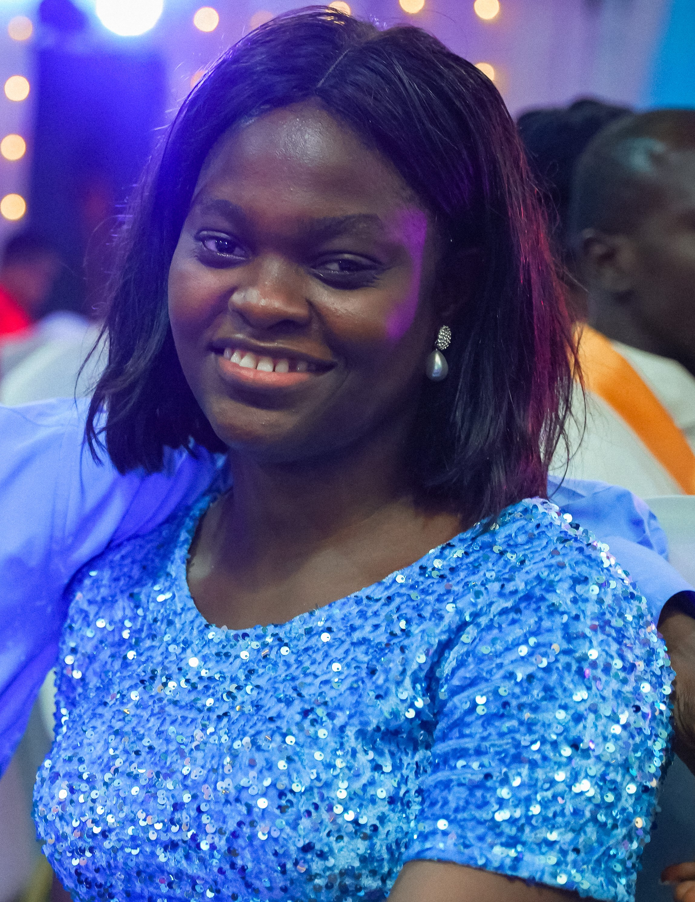

Olufunbi Fawole
8 Onanubi close, Ikeja, Lagos, Nigeria.
+2348141568142 | layoslim@gmail.com
Summary
Skilled in managing schedules, coordinating projects, handling email correspondence, and conducting thorough research. Dedicated and detail-oriented Virtual Assistant with over 4 years of experience providing administrative, technical, and creative support to clients in various industries. Competent at using a range of digital tools, including Microsoft Office, Google Workspace, Asana, etc., with a strong commitment to maintaining confidentiality and upholding client satisfaction.
Education
The Polytechnic Ibadan - Oyo, Nigeria. (September 2014 - September 2016)
HND, Computer Science
Work Experience
Customer Service Executive (June 2021 - September 2024)
MKOPA, Yaba Lagos, Nigeria
- Resolved customer complaints promptly and escalated complex cases to senior support when necessary, ensuring timely solutions.
- Monitored trends in customer inquiries and feedback, reporting management insights to support strategic improvements.
Customer Service Executive/Social Media Manager (August 2019 - April 2021)
Mentapps, Ikeja Lagos, Nigeria
- Managed and monitored social media platforms, including Facebook, Twitter, Instagram, and LinkedIn, to maintain an active and cohesive online presence.
- Maintained detailed records of customer interactions and transactions to ensure consistency in service and follow-ups.
Personal Assistant to the CEO (May 2017 - May 2019)
National Institute of Credit Administration, Lagos Island, Nigeria
- Prepared reports, presentations, and supporting documents, tailored to meet specific project or team needs.
- Conducted research and compiled relevant information to support informed decision-making and strategy development.
- Scheduled and coordinated meetings, appointments, and events, optimizing calendar management to support seamless workflows.
Volunteer Activities
Co-Founder, Layonuel Digitals (October 2024 - Present)
- Coordinated meetings and appointments with clients, including sending out calendar invites, reminders, and preparing agendas.
- Designed and created engaging flyers, social media graphics, and event invitations for digital distribution on social media platforms and direct client outreach.
Skills
- Excellent written and verbal communication skills
- Strong organizational and time-management skills
- Attention to detail
Interests
- Social Media and Digital Marketing
- Digital Communication and Collaboration Tools
- Learning New Technologies
Languages
- Yoruba - Native
- English - Expert